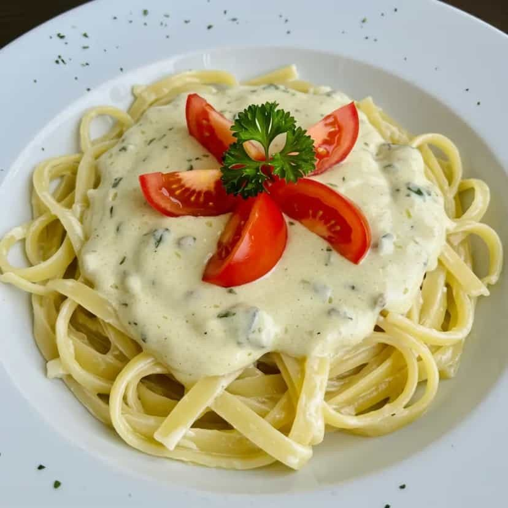

Massas
Molho de queijos

Ingredientes
- 1 colher (sopa) de manteiga
- 1 cebola cortada em rodelas
- 1 xícara de requeijão ou mozarela picado
- 1 xícara de gorgonzola picado
- 1 xícara de água
- 1 xícara de creme de leite
- Noz-moscada a gosto
Modo de preparo
- Coloque a manteiga e a cebola numa panela média e leve ao fogo até a cebola dourar. Elimine a cebola.
- Aos poucos, acrescente cada tipo de queijo, em fogo brando, em banho-maria, alternando com a água e misturando até que todos fiquem bem dissolvidos. Deixe esfriar completamente e congele.
Observação
Qualquer tipo de prato quente precisa passar por resfriamento antes de ser congelado, para interromper o cozimento: faça blocos de gelo em assadeiras e coloque o recipiente quente sobre o gelo, ou use uma bacia com água gelada e cubos de gelo. Congelamento: coloque o molho em um recipiente rígido que possa ir ao freezer, ou em potes de polietileno; etiquete e congele (também pode ir direto num saco plástico que feche hermeticamente). Descongelamento: na geladeira de um dia para o outro; ponha numa panela e leve ao fogo brando, em banho-maria, até descongelar. Aqueça, junte o creme de leite mexendo bem, sem deixar ferver, tempere com noz-moscada a gosto e sirva.